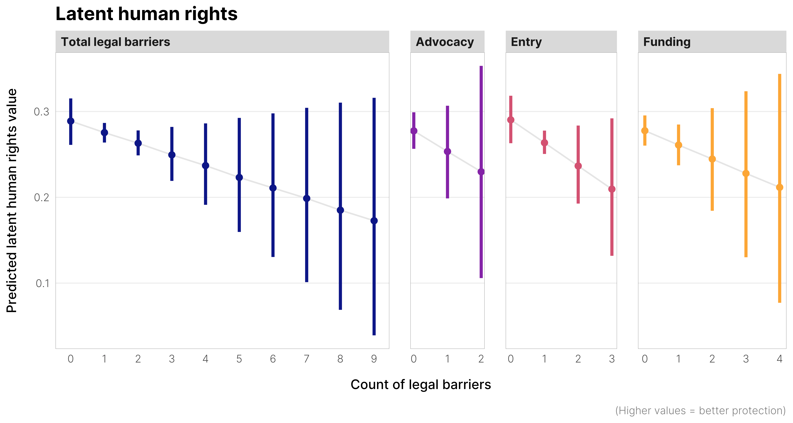

Comparative public administration
PMAP 8441 / 4441
August 29, 2024
Plan for today
Who am I and why am I here?
Who are you all and why are
you
here?
Building our Global Bureaucracy Toolkit
™
How this class works
Things they don’t teach you in college/grad school
Who am I and why
am I here?
Main questions
How do nonprofits work differently in different countries?
How are nonprofits regulated in different countries?
How do the public and nonprofit sectors in different countries shape human rights?

COVID concerns
When
wastewater
levels
are moderate or above, I’ll wear a mask
When they’re lower than that, I’ll
sometimes
wear a mask
Who are you all and
why are
you
here?
Name
Where you’re from
Major / concentration
Most boring fact about yourself
Why you’re taking this class
Building our
Global
Bureaucracy
Toolkit
™
Bureaucracies matter
Good governance saves lives
Administrative burdens hurt people
Project 2025, Agenda47, and Schedule F
We can learn from other countries
Good governance saves lives
Other countries know stuff
How this class works
How this class works
Class website
iCollege
Weekly assignments
Mini presentation
Essays
Final project
Break!
Things they don’t teach you in college/grad school
Secret skills
AI and writing
How to read and annotate an article
How to summarize, synthesize, and write about articles
How do discuss an article in a seminar